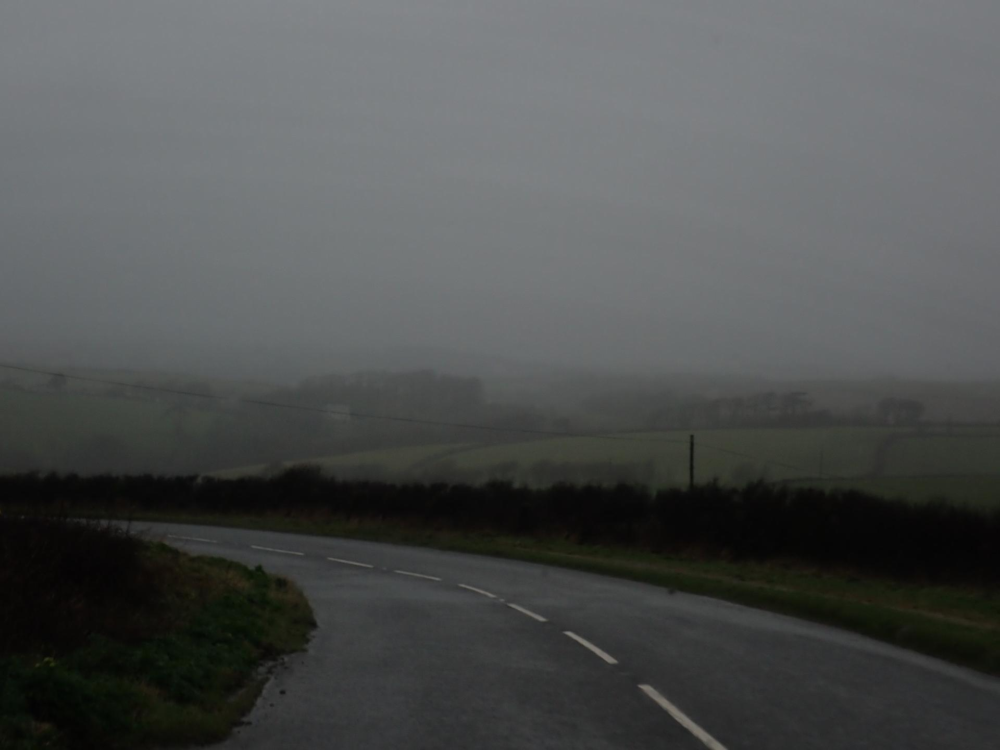
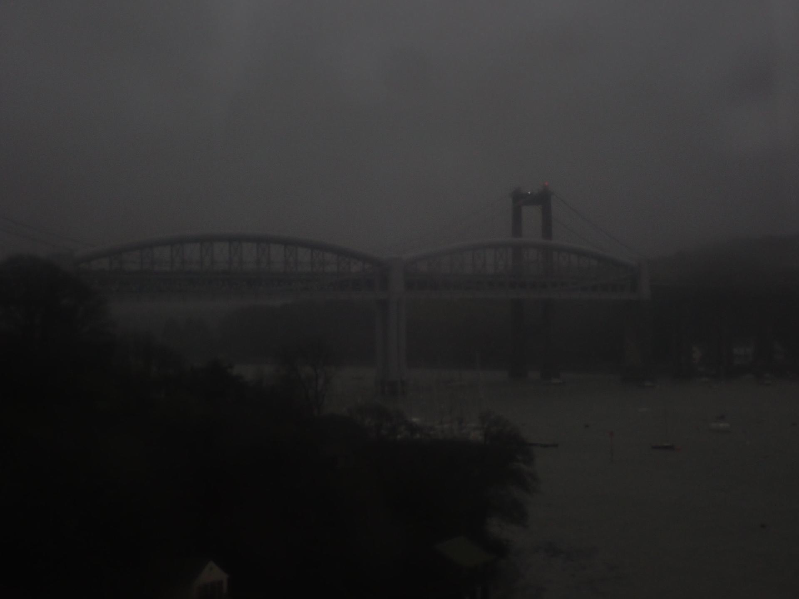
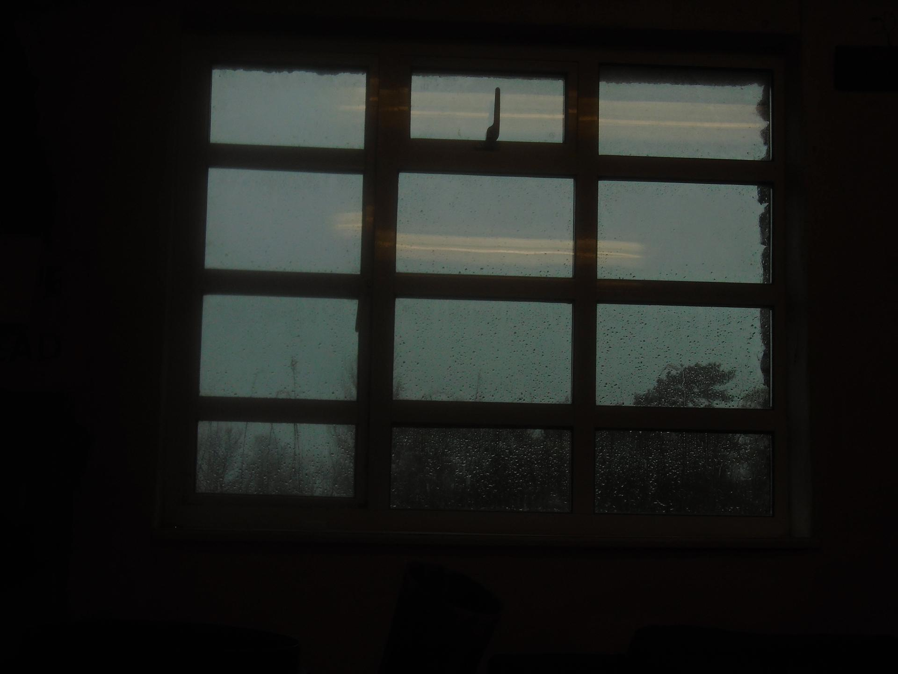
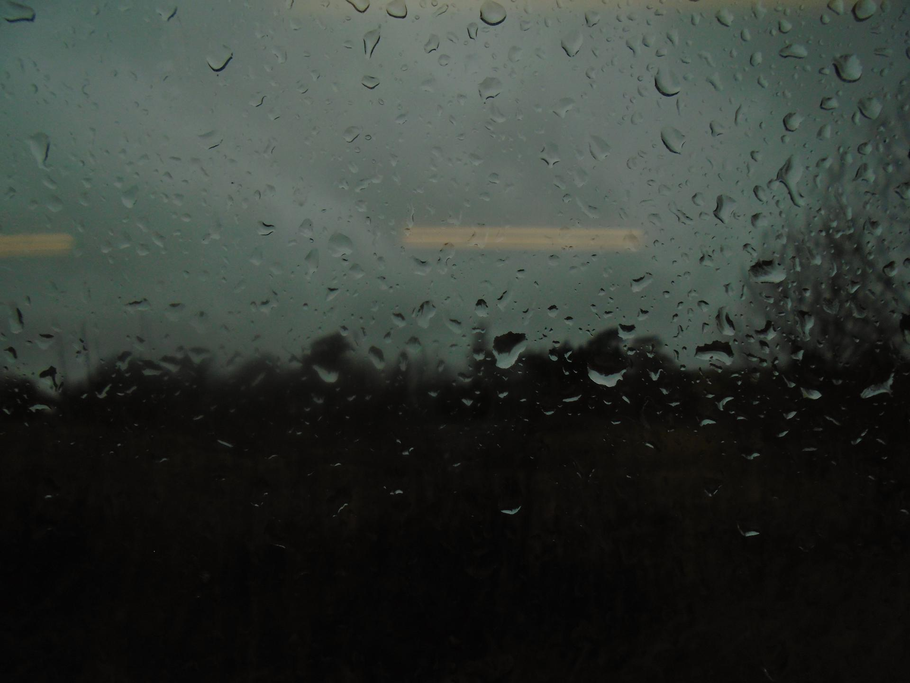
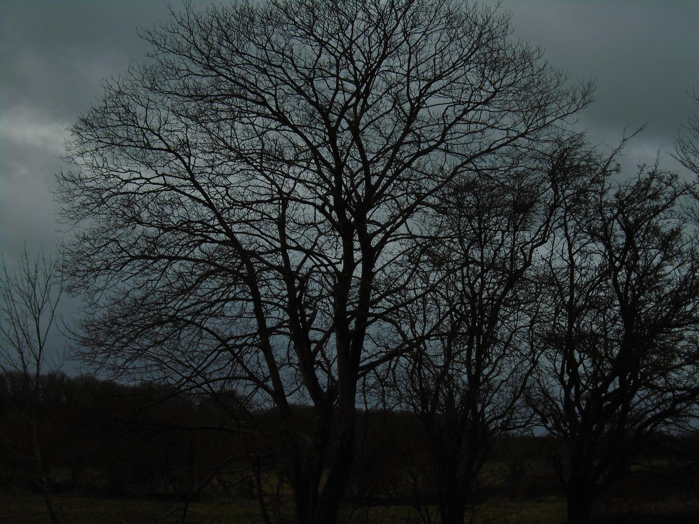
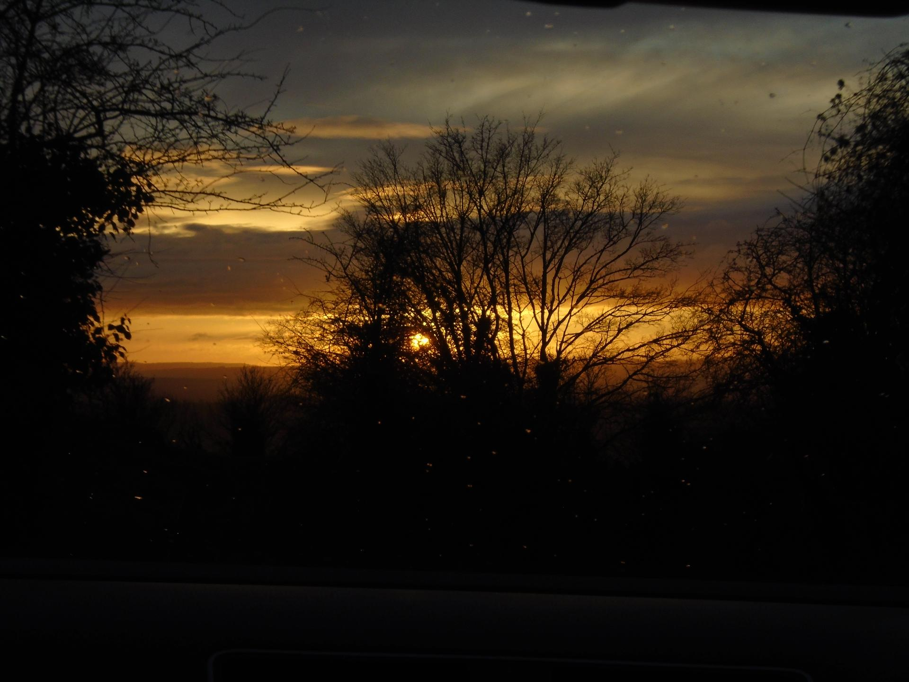
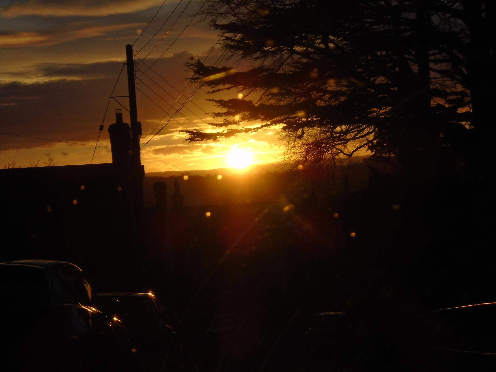
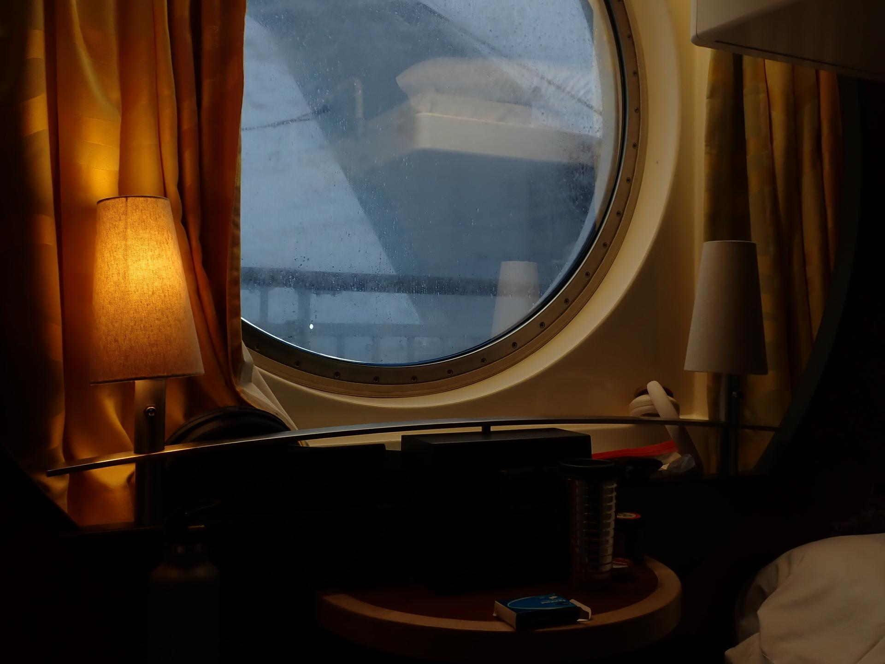
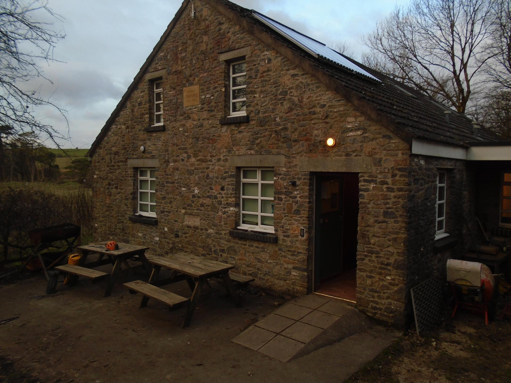
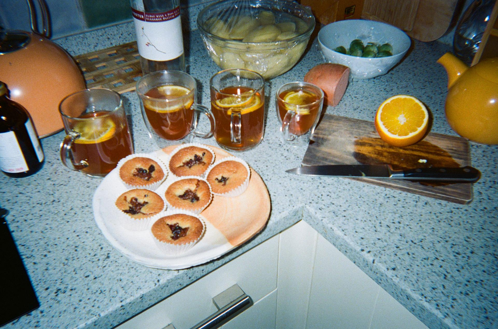

Photography
My intrest
My intrest in photography is mostly practical in nature. Taking photographs of things I find intresting like microscopic organisms, Sea Anenomes and Underground Caverns. While I obviously want to, and do, put in the effort of making the picture astheticaly pleasing, it is almost allways the subject that takes the spotlight. However I have dabbled a little in artistic photographs, photos less about capturing another subject or intrest, but the expression of emotions and feelings. However I do it infrequently enouth to say that is a minor focus of mine.
Equipment
I don't invest as much money as others into photography equipment, and often-times the... unique enviroment of my photography locations limits the avalible options. However my very first camera was a sony DSC-W800, a small, pocket-sized 20MP digicam. This was back when you needed an actual camera to photograph things, so I enjoyed it thoughly. After years of use, it found it's way into a dusty drawer and stayed there for over five years... then, an older me, having bought his first microscope, needed a camera. I found it, brushed off the dust and used it to photograph several microscopic organisams. But then... I decided to take it with me on walks, to the beach, and more. Eventually I started collecting and curating large lists of photos on my computer, sharing them online and more. I had gotten into the hobby of photography. But... the camera was dated. Very dated. I didn't really need much more quality, just above 1080p would do. The needs of a camera changed. I had taken up the hobby of caving, a brutal enviroment for cameras with fine dust, water and the unavoidable bumps and knocks. These conditons, despite my best efforts, proved too much for my old digicam, and after a trip down OFD (see caving) it's lenses were clogged with dust, and operation was impossible. To replace it, I bought a TG-7. A tough action-camera, it has so far stood up to plenty of harsh conditions, such as salt water, 5m dives and multiple harsh on-glass bumps on rock. Overall, it's a great camera for this purpose. Unfortunatley the oppetunity to test this camera in cave conditons has not come around yet.
Pictures
As few of my photographs are for the sake of photography, there won't be many here. However I urge you to check out biology, as that's where the majority of my photographs go.
As for style, I would say that I like warm golden colours, but also enjoy very dark scenes. Rain is another big theme of my photography, along with warm cosy scenes. What sort of emotions does this photography evoke in you? Do let me know!









